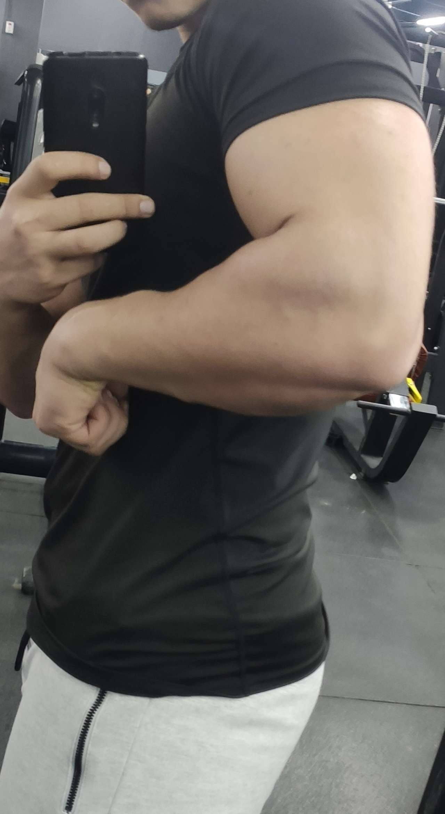

When I first started armwrestling, i was very weak and frustrated.
I was being defeated in almost all the armwrestling tries.
after i was defeated many times and watched people armwrestle, i wanted to know more about ArmWrestling.
I researched: techniques, workouts, tips
I started working on technique and strength and started to see the results
